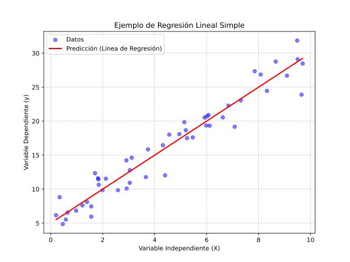

🤖 Unidad 2. Regresión Lineal para la Inteligencia Artificial
La regresión lineal es uno de los modelos más simples y fundamentales en el campo de la inteligencia artificial y el aprendizaje automático. A pesar de su simplicidad, proporciona una base sólida para entender cómo los algoritmos de regresión pueden ser usados para hacer predicciones. En este artículo exploraremos cómo funciona la regresión lineal, sus aplicaciones, y la compararemos con otros modelos de regresión como Ridge y Lasso.
¿Qué es la Regresión Lineal?
La regresión lineal es un método estadístico que intenta modelar la relación entre una variable dependiente y una o más variables independientes mediante una línea recta. La ecuación que representa una regresión lineal simple tiene la siguiente forma:
- y: Variable dependiente (la que se intenta predecir).
- X: Variable independiente (el predictor).
- b_0: Intercepto, valor de y cuando X es cero.
- b_1: Coeficiente que representa la pendiente de la línea.
- \(\epsilon\): Error o ruido, la diferencia entre la predicción y el valor real.
La regresión lineal se utiliza principalmente para problemas de predicción numérica, como el precio de una vivienda, el rendimiento de una acción o cualquier otra situación en la que exista una relación lineal entre las variables.

Ejemplo en Python: Regresión Lineal Simple
import numpy as np
import pandas as pd
import matplotlib.pyplot as plt
from sklearn.linear_model import LinearRegression
from sklearn.model_selection import train_test_split
from sklearn.metrics import mean_squared_error, r2_score
# Generar datos de ejemplo
np.random.seed(42)
X = np.random.rand(100, 1) * 10 # Variable independiente
y = 2.5 * X.flatten() + 5 + np.random.randn(100) * 2 # y = 2.5x + 5 + ruido
# Dividir datos
X_train, X_test, y_train, y_test = train_test_split(X, y, test_size=0.2, random_state=42)
# Crear y entrenar modelo
model = LinearRegression()
model.fit(X_train, y_train)
# Predicciones
y_pred = model.predict(X_test)
# Evaluación
mse = mean_squared_error(y_test, y_pred)
r2 = r2_score(y_test, y_pred)
print(f"Coeficiente (pendiente): {model.coef_[0]:.4f}")
print(f"Intercepto: {model.intercept_:.4f}")
print(f"MSE: {mse:.4f}")
print(f"R² Score: {r2:.4f}")
# Visualización
plt.figure(figsize=(10, 6))
plt.scatter(X_test, y_test, color='blue', label='Datos reales', alpha=0.6)
plt.plot(X_test, y_pred, color='red', linewidth=2, label='Predicción')
plt.xlabel('Variable Independiente (X)')
plt.ylabel('Variable Dependiente (y)')
plt.title('Regresión Lineal Simple')
plt.legend()
plt.grid(True, alpha=0.3)
plt.show()
Aplicaciones de la Regresión Lineal
La regresión lineal es ampliamente utilizada en una variedad de aplicaciones, como:
-
Economía: Predicción de precios de bienes y servicios. Por ejemplo, podemos usar la regresión lineal para modelar la relación entre la inflación y el precio de los alimentos. En este caso, la regresión lineal simple puede ser suficiente si se trata de una relación clara y directa. Ejemplo en Python
-
Finanzas: Estimación del rendimiento de acciones o bonos. La regresión lineal puede ayudar a estimar cómo factores como las tasas de interés y el crecimiento económico afectan los precios de las acciones. Si existen muchas variables correlacionadas, Ridge Regression sería una mejor opción para estabilizar el modelo y evitar el sobreajuste. Ejemplo en Python
-
Salud: Modelado de la relación entre la dosis de un medicamento y la respuesta del paciente. En este ámbito, se podría usar la regresión lineal para entender cómo varía la presión sanguínea en respuesta a diferentes dosis de un medicamento. Si existen múltiples factores (como edad, peso, y otras condiciones de salud), Lasso Regression podría ayudar a identificar cuáles son las características más relevantes. Ejemplo en Python
-
Marketing: Determinación de la relación entre el gasto publicitario y las ventas. La regresión lineal se utiliza para estimar el impacto de diferentes estrategias publicitarias en las ventas. Si existen muchas campañas publicitarias y se necesita identificar cuáles son las más efectivas, Lasso Regression podría ayudar a eliminar las menos significativas y reducir la complejidad del modelo.
-
Educación: Predicción de calificaciones de estudiantes en función de variables como el tiempo de estudio y la asistencia. Si el objetivo es identificar los factores que tienen mayor influencia en el rendimiento académico, Lasso Regression sería útil para seleccionar solo las características más relevantes, como participación en clase, tiempo de estudio, o participación en actividades extracurriculares.
-
Inmobiliaria: Predicción del valor de una propiedad con base en características como la ubicación, el tamaño y el número de habitaciones. En este contexto, Ridge Regression puede ser útil para manejar la multicolinealidad, ya que características como la ubicación y el tamaño de una propiedad suelen estar correlacionadas. Ridge ayuda a estabilizar los coeficientes y mejorar la capacidad predictiva del modelo.
-
Agricultura: Estimación del rendimiento de cultivos en función de factores como el clima, la cantidad de fertilizante y el tipo de suelo. Ridge Regression es adecuada cuando hay múltiples factores que pueden estar correlacionados, como la temperatura y la precipitación. Esto ayuda a manejar mejor la multicolinealidad y a mejorar la generalización del modelo. Ejemplo en Python
¿Qué técnica es más apropiada?
- Economía y Finanzas: En estos campos, la regresión lineal puede ser útil cuando se trata de problemas simples, como la predicción de precios basada en una o dos características. Sin embargo, si hay muchas variables que están altamente correlacionadas, Ridge Regression sería más apropiada para evitar el sobreajuste. Ejemplo en Python
- Salud: Para el modelado de la relación entre la dosis de un medicamento y la respuesta del paciente, Lasso Regression sería adecuada si hay muchas características potenciales, ya que podría simplificar el modelo eliminando características irrelevantes. Ejemplo en Python
- Marketing: Si hay muchas variables de marketing, como diferentes tipos de publicidad, Lasso Regression puede ayudar a identificar cuáles de ellas son las más importantes, eliminando las menos significativas.
- Inmobiliaria: En el caso de la predicción de precios de propiedades, Ridge Regression puede ser útil para manejar la multicolinealidad, ya que a menudo las características como ubicación, tamaño y tipo de propiedad están correlacionadas.
- Educación: Si queremos predecir las calificaciones de los estudiantes y hay muchas características (como el historial académico, asistencia, participación en clase, etc.), Lasso sería útil para identificar las variables más relevantes y eliminar las menos importantes.
- Agricultura: Para la estimación del rendimiento de cultivos, Ridge Regression sería adecuada si existen múltiples factores correlacionados, ya que permite manejar mejor la multicolinealidad. Ejemplo en Python
Limitaciones de la Regresión Lineal
Aunque la regresión lineal es fácil de entender y usar, presenta algunas limitaciones importantes que deben tenerse en cuenta al aplicar este modelo:
-
Supone una relación lineal: La regresión lineal solo puede modelar relaciones lineales entre las variables. Si la relación es no lineal, el modelo tendrá un rendimiento pobre. Esto implica que, si los datos muestran una relación más compleja (por ejemplo, cuadrática o exponencial), la regresión lineal no podrá capturar dicha complejidad, resultando en predicciones inexactas. En estos casos, sería mejor utilizar modelos que puedan capturar la no linealidad, como la regresión polinómica o técnicas más avanzadas como redes neuronales.
-
Sensibilidad a los outliers: La presencia de valores atípicos puede afectar significativamente el ajuste de la línea, ya que la regresión lineal minimiza la suma de los errores al cuadrado. Los outliers, al tener errores más grandes, influyen desproporcionadamente en la línea de ajuste, lo cual puede distorsionar el modelo. Para mitigar este problema, se pueden utilizar técnicas como la detección y eliminación de outliers, o emplear métodos de regresión robusta que minimicen el impacto de estos valores extremos.
-
Multicolinealidad: Cuando las variables independientes están altamente correlacionadas, el modelo puede producir resultados inestables. La multicolinealidad genera problemas en la estimación de los coeficientes, haciendo que sean muy sensibles a pequeñas variaciones en los datos y, por lo tanto, menos interpretables. Esto puede llevar a una disminución en la precisión de las predicciones y a problemas en la generalización del modelo. En estos casos, se recomienda usar técnicas de regularización, como Ridge Regression, que penaliza los coeficientes grandes y ayuda a reducir los efectos de la multicolinealidad, estabilizando el modelo.
Ridge Regression y Lasso Regression
Para superar algunas de las limitaciones de la regresión lineal estándar, se han desarrollado técnicas de regularización como Ridge y Lasso. Ambas técnicas son versiones modificadas de la regresión lineal que incluyen un término de penalización para mejorar el rendimiento y evitar el sobreajuste.
Ridge Regression
Ridge Regression, también conocida como regresión de cresta, añade un término de regularización L2 a la función de pérdida. Esto significa que el modelo penaliza los coeficientes grandes, haciendo que los valores de los parámetros sean más pequeños y estables. La ecuación para Ridge es:
- \lambda: Parámetro de regularización que controla la cantidad de penalización.
- \(heta_j\): Coeficientes del modelo.
El término de penalización ayuda a reducir la complejidad del modelo, lo cual resulta útil especialmente cuando existen múltiples variables independientes correlacionadas (multicolinealidad).
Ventajas de Ridge Regression
- Reducción del sobreajuste: Ridge ayuda a reducir el riesgo de sobreajuste al penalizar los coeficientes grandes.
- Mejora la estabilidad: Especialmente en presencia de multicolinealidad, el modelo Ridge tiende a ser más estable.
Ejemplo en Python: Ridge Regression
import numpy as np
from sklearn.linear_model import Ridge, LinearRegression
from sklearn.model_selection import train_test_split
from sklearn.preprocessing import StandardScaler
from sklearn.metrics import mean_squared_error, r2_score
from sklearn.datasets import make_regression
# Generar datos con multicolinealidad
X, y = make_regression(n_samples=200, n_features=10, n_informative=5,
noise=10, random_state=42)
# Dividir datos
X_train, X_test, y_train, y_test = train_test_split(X, y, test_size=0.2, random_state=42)
# Escalar datos (importante para Ridge)
scaler = StandardScaler()
X_train_scaled = scaler.fit_transform(X_train)
X_test_scaled = scaler.transform(X_test)
# Comparar Regresión Lineal vs Ridge
linear_model = LinearRegression()
ridge_model = Ridge(alpha=1.0) # alpha es el parámetro de regularización λ
# Entrenar modelos
linear_model.fit(X_train_scaled, y_train)
ridge_model.fit(X_train_scaled, y_train)
# Predicciones
y_pred_linear = linear_model.predict(X_test_scaled)
y_pred_ridge = ridge_model.predict(X_test_scaled)
# Evaluación
print("Regresión Lineal:")
print(f" MSE: {mean_squared_error(y_test, y_pred_linear):.4f}")
print(f" R²: {r2_score(y_test, y_pred_linear):.4f}")
print(f" Suma de coeficientes al cuadrado: {np.sum(linear_model.coef_**2):.4f}")
print("\nRidge Regression:")
print(f" MSE: {mean_squared_error(y_test, y_pred_ridge):.4f}")
print(f" R²: {r2_score(y_test, y_pred_ridge):.4f}")
print(f" Suma de coeficientes al cuadrado: {np.sum(ridge_model.coef_**2):.4f}")
# Comparar magnitud de coeficientes
import matplotlib.pyplot as plt
plt.figure(figsize=(12, 5))
plt.subplot(1, 2, 1)
plt.bar(range(len(linear_model.coef_)), linear_model.coef_)
plt.title('Coeficientes - Regresión Lineal')
plt.xlabel('Feature')
plt.ylabel('Coeficiente')
plt.subplot(1, 2, 2)
plt.bar(range(len(ridge_model.coef_)), ridge_model.coef_)
plt.title('Coeficientes - Ridge (alpha=1.0)')
plt.xlabel('Feature')
plt.ylabel('Coeficiente')
plt.tight_layout()
plt.show()
Lasso Regression
Lasso Regression añade un término de regularización L1 a la función de pérdida. Este término tiene la capacidad de hacer que algunos coeficientes sean exactamente cero, eliminando efectivamente ciertas características del modelo. La ecuación de Lasso es:
- \(\lambda\): Parámetro de regularización que controla la penalización.
Lasso es útil no solo para reducir el sobreajuste, sino también para la selección de características, ya que elimina automáticamente aquellas que no son útiles para la predicción.
Ventajas de Lasso Regression
- Selección de características: Lasso simplifica el modelo seleccionando solo las características más relevantes.
- Reducción del sobreajuste: Similar a Ridge, Lasso ayuda a evitar el sobreajuste del modelo.
Ejemplo en Python: Lasso Regression
import numpy as np
from sklearn.linear_model import Lasso, LinearRegression
from sklearn.model_selection import train_test_split
from sklearn.preprocessing import StandardScaler
from sklearn.metrics import mean_squared_error, r2_score
from sklearn.datasets import make_regression
# Generar datos con características irrelevantes
X, y = make_regression(n_samples=200, n_features=20, n_informative=5,
noise=10, random_state=42)
# Dividir y escalar datos
X_train, X_test, y_train, y_test = train_test_split(X, y, test_size=0.2, random_state=42)
scaler = StandardScaler()
X_train_scaled = scaler.fit_transform(X_train)
X_test_scaled = scaler.transform(X_test)
# Entrenar modelos
linear_model = LinearRegression()
lasso_model = Lasso(alpha=1.0) # alpha es el parámetro de regularización λ
linear_model.fit(X_train_scaled, y_train)
lasso_model.fit(X_train_scaled, y_train)
# Predicciones
y_pred_linear = linear_model.predict(X_test_scaled)
y_pred_lasso = lasso_model.predict(X_test_scaled)
# Evaluación
print("Regresión Lineal:")
print(f" MSE: {mean_squared_error(y_test, y_pred_linear):.4f}")
print(f" R²: {r2_score(y_test, y_pred_linear):.4f}")
print(f" Coeficientes no-cero: {np.sum(np.abs(linear_model.coef_) > 0.01)}")
print("\nLasso Regression:")
print(f" MSE: {mean_squared_error(y_test, y_pred_lasso):.4f}")
print(f" R²: {r2_score(y_test, y_pred_lasso):.4f}")
print(f" Coeficientes no-cero: {np.sum(np.abs(lasso_model.coef_) > 0.01)}")
print(f" Características eliminadas: {np.sum(lasso_model.coef_ == 0)}")
# Visualizar selección de características
import matplotlib.pyplot as plt
plt.figure(figsize=(12, 5))
plt.subplot(1, 2, 1)
plt.bar(range(len(linear_model.coef_)), linear_model.coef_)
plt.title('Coeficientes - Regresión Lineal')
plt.xlabel('Feature')
plt.ylabel('Coeficiente')
plt.axhline(y=0, color='r', linestyle='--', alpha=0.3)
plt.subplot(1, 2, 2)
plt.bar(range(len(lasso_model.coef_)), lasso_model.coef_)
plt.title('Coeficientes - Lasso (alpha=1.0)')
plt.xlabel('Feature')
plt.ylabel('Coeficiente')
plt.axhline(y=0, color='r', linestyle='--', alpha=0.3)
plt.tight_layout()
plt.show()
# Ejemplo con RidgePath para visualizar el efecto de alpha
from sklearn.linear_model import lasso_path
alphas = np.logspace(-4, 1, 50)
coefs, _ = lasso_path(X_train_scaled, y_train, alphas=alphas)
plt.figure(figsize=(10, 6))
for coef in coefs:
plt.plot(alphas, coef)
plt.xscale('log')
plt.xlabel('Alpha (regularización)')
plt.ylabel('Coeficientes')
plt.title('Lasso Path - Cómo varían los coeficientes con alpha')
plt.grid(True, alpha=0.3)
plt.show()
Comparación entre Regresión Lineal, Ridge y Lasso
| Característica | Regresión Lineal | Ridge Regression | Lasso Regression |
|---|---|---|---|
| Regularización | No | L2 | L1 |
| Penalización | Ninguna | Penaliza coeficientes grandes | Algunos coeficientes se hacen cero |
| Sobreajuste | Alta posibilidad | Baja | Baja |
| Multicolinealidad | Problemas con multicolinealidad | Mejor manejo | Mejor manejo |
| Selección de características | No | No | Sí |
- Regresión Lineal: Ideal para problemas simples y cuando existe una relación lineal clara entre las variables. Sin embargo, es propensa al sobreajuste si no se maneja adecuadamente.
- Ridge Regression: Útil cuando existe multicolinealidad, ya que la regularización L2 ayuda a estabilizar el modelo. No elimina características, pero hace que los coeficientes sean más pequeños.
- Lasso Regression: Útil para la selección de características, ya que fuerza algunos coeficientes a ser exactamente cero. Esto resulta en un modelo más sencillo y fácil de interpretar.
Conclusiones
La regresión lineal es una excelente herramienta para comenzar a entender los modelos de regresión. Sin embargo, cuando nos enfrentamos a datos más complejos, con múltiples características y posibles problemas de sobreajuste, Ridge y Lasso se presentan como mejores alternativas. Estos modelos ayudan a mejorar la capacidad de generalización del modelo y a reducir la complejidad, haciendo que la predicción sea más precisa y confiable.
La elección entre la regresión lineal, Ridge y Lasso dependerá de la naturaleza de los datos y los objetivos del análisis. Si se desea simplicidad y no hay riesgo de multicolinealidad, la regresión lineal puede ser suficiente. Si el modelo tiende a sobreajustarse o hay muchas características correlacionadas, Ridge y Lasso son opciones a considerar, siendo Lasso ideal si se desea simplificar el modelo eliminando características irrelevantes.
Ejemplos Adicionales de Uso
- Predicción de Ventas Minoristas: En un negocio minorista donde existen múltiples características que afectan las ventas (promociones, temporadas, clima, ubicación), Ridge Regression sería útil para manejar la posible multicolinealidad entre estas características. Ejemplo en Python
- Modelado de la Demanda Energética: En la predicción del consumo de energía eléctrica, que depende de variables como temperatura, hora del día, y tipo de día (laboral o festivo), Ridge podría ayudar a manejar la complejidad y multicolinealidad.
- Análisis de Sentimientos: Al predecir la polaridad de una opinión (positiva o negativa) en base a muchas palabras o frases, Lasso Regression sería ideal para seleccionar las palabras más relevantes y reducir la dimensionalidad.
- Predicción de Costos de Seguros Médicos: Para estimar los costos de seguros médicos en función de características como edad, estado de salud, hábitos de vida y ubicación geográfica, Lasso podría ayudar a eliminar características redundantes, haciendo el modelo más interpretable.
- Optimización de Cadenas de Suministro: Para predecir el tiempo de entrega de productos considerando múltiples variables (tráfico, distancia, clima, inventario), Ridge Regression puede ser útil para manejar la correlación entre factores como tráfico y distancia.
- Reconocimiento de Actividad Humana: En la clasificación de actividades humanas usando sensores portátiles (como acelerómetros y giroscopios), Lasso podría ayudar a identificar cuáles de las señales del sensor son más importantes para diferenciar entre actividades como caminar, correr o estar de pie. Ejemplo en Python